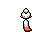
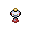

Pokédex / #358

Chimecho #358
Psychic
It uses the sucker on its head to hang from a tree or from eaves. It can produce seven different tones.
Generation 3 · Hoenn

Stats
| Attack | 50 | |
|---|---|---|
| Defense | 80 | |
| Sp. Atk | 95 | |
| Sp. Def | 90 |
In the wild
| Wild level | 40–50 |
|---|---|
| HP | 65 |
| Experience | 10 |
| Egg groups | Amorphous |
Evolution
- Does not evolve.
Moves
| Level | Move | Type | Category | Power | Energy | Cooldown | Effect | |
|---|---|---|---|---|---|---|---|---|
| 1 | Tackle | Normal | Physical | 15 | 15 | 1s | Tackle is one of the most common and basic moves a Pokemon learns. It deals damage with no additional effects. | |
| 5 | Astonish | Ghost | Physical | 30 | 30 | 5s | The user attacks the target while shouting in a startling fashion. This may also make the target flinch. | |
| 10 | Confusion | Psychic | Special | 50 | 60 | 12s | Confusion deals damage and has a 10% chance of confusing the target. | |
| 15 | Psywave | Psychic | Special | – | 100 | 15s | Psywave inflicts a random amount of HP damage, varying by user's level. | |
| 20 | Take Down | Normal | Physical | 90 | 90 | 14s | Take Down deals damage and has no secondary effect. | |
| 25 | Stored Power | Psychic | Special | 20 | 80 | 18s | Stored Power deals variable damage depending on the stat modifications of the user. When the user has no stat modifications, Stored Power's base power is 20. Its power increases by 20 for each stat boost the user has. | |
| 30 | Healing Wish | Psychic | Status | 250 | 150 | 90s | The user become with 1 HP and all party members recover full HP. | |
| 35 | Psychic | Psychic | Special | 90 | 100 | 21s | Psychic deals damage and has a 10% chance of lowering the target's Special Defense by one stage. | |
| 40 | Uproar | Normal | Special | 90 | 100 | 25s | The user attacks in an uproar for three turns. During that time, no Pokemon can fall asleep. | |
| 45 | Psyshock | Psychic | Special | 80 | 85 | 12s | The user materializes an odd psychic wave to attack the target. This attack does physical damage. | |
| 50 | Yawn | Normal | Status | – | 100 | 95s | In the turn that Yawn is used, the only effect will be the user yawning at the target. At the end of the next turn, the target (if still active) will fall asleep unless it gets affected by a major status condition in the meantime, a status-protecting move is used (like Safeguard or Uproar), or the battle ends. | |
| 55 | Double-Edge | Normal | Physical | 120 | 120 | 18s | Double-Edge deals damage and has no secondary effect. | |
| 60 | Extrasensory | Psychic | Special | 80 | 95 | 18s | Extrasensory inflicts damage and has a 10% chance of causing the target to flinch. | |
| 65 | Synchronoise | Psychic | Special | 120 | 130 | 27s | Using an odd shock wave, the user inflicts damage on any Pokemon of the same type in the area around it. | |
| 70 | Double Team | Normal | Status | – | 150 | 90s | Double Team increases the user's speed into maximum, creating illusions. |
Field abilities
FlashBlinkTeleport
Special abilities
Levitate
Egg moves
Technical machines
Calm MindDouble TeamDream EaterEnergy BallLight ScreenProtectPsychicRain DanceReflectRestSafeguardShadow BallShock WaveSubstituteTauntThunder WaveToxic
Drops
| Item | Amount | Chance | |
|---|---|---|---|
| twisted spoon | 1 | 50% | |
| linearly guided hypnose pendant | 1 | 25% | |
| shadow orb | 1 | 20% | |
| cutting fang | 1 | 20% | |
| luminous orb | 1 | 10% | |
| plasmatic lightning | 1 | 10% | |
| onigiri | 1–5 | 5% | |
| Mind Plate | 1 | 0.1% | |
 | chimecho doll | 1 | 0.1% |
| held twisted spoon | 1 | 0.02% | |
| TM 10 | 1 | 0.01% | |
| TM 27 | 1 | 0.01% | |
| TM 43 | 1 | 0.01% |